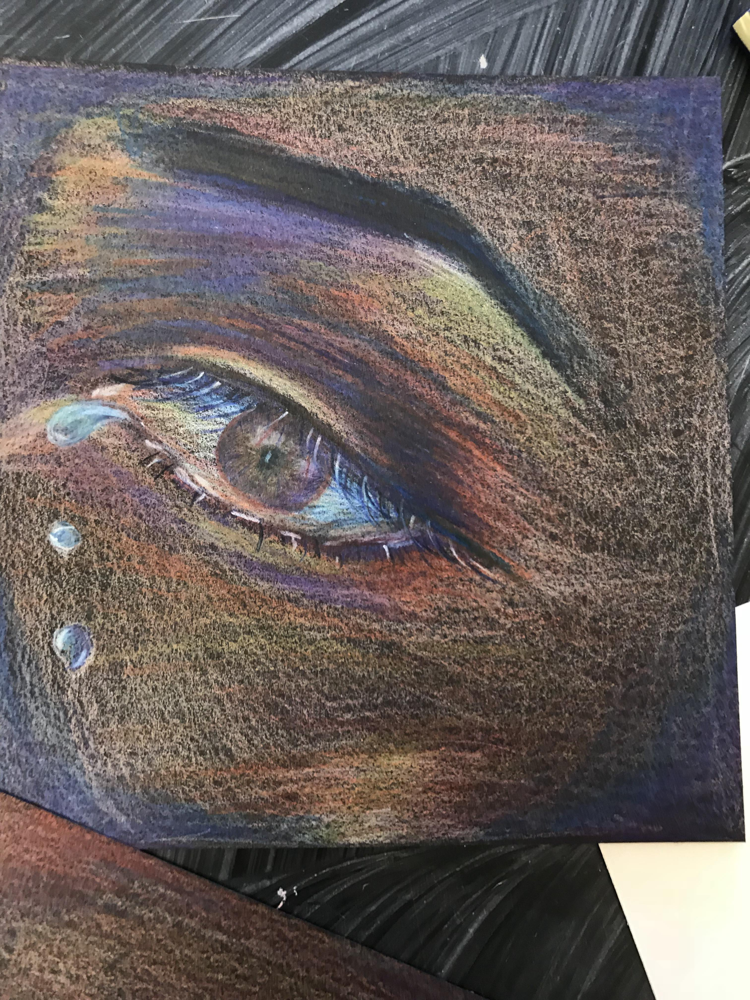

Anna Zhang
email: anna030505@gmail.com
Phone Number: 7743156684
37 Pound Street, Medfield, MA
May 5th, 2003
Currently a freshman at Medfield High School, Year of 2021
Why I deserve this job
Although I've never worked before, but I think I'm capable of earning this job position.
I'm a responsible student that has multiple talents in different areas. I'm well rounded in different fields of interest;
and my favorite time period from history and my favorite art style is Renaissance. I am also a team player that communicate to all my members to solve problems.
Outside of school, I'm passionate about theatre and art, which improved my creativity and teamwork greatly. With my skills in many fields, I believe I can contibute my best to this job.
Academic Information
-
GPA (unweighted): 3.95
- GPA(weighted): 4.3
-
8th grade math award
-
Above average for 10th grade AMC test
-
3 out of 4 academic honors classes
Extra Curricular Activities
-
Participated in Technovation
-
Member of the Medfield Theatre Society
-
Competed in TVL as part of the Medfield Swim team
-
Competed in many meets in the Medfield Spring Track and Field team
-
Part of the Medfield Science Olympiad
- Came in second place for one of the Science Olympiad contests
-
Lead dancer for local dance academy for 8 years
-
Self-taught artist
-
Recommanded and enrolled for National Youth Leadership Forum Medicine
-
Leader of computer science team
Other Skills
-
Fluent in both Mandarin and English
-
Studied two Romance languages: French and Latin
-
Familiar with JavaScript coding and HTML
-
Completed photography class and dedicated in photography
-
Efficient application of graphic design
-
Strong interest for antiquity cultures
Demonstration
